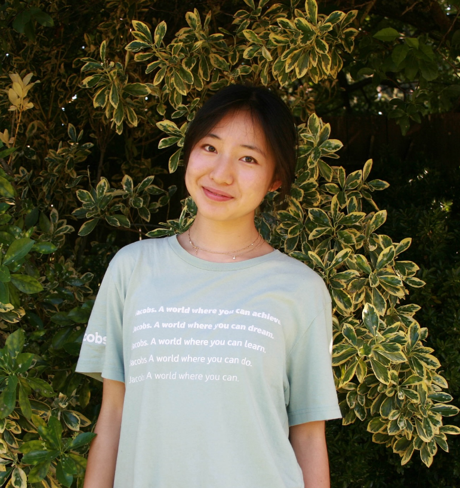

|
I am a second year undergraduate at Harvey Mudd College, studying Engineering with a focus on robotics.
My goal is to build robots which automate repetitive, unsafe, and expensive labor in climate technology, to enable deployment at scale. This can look like improving loaded manipulator dexterity so robots can perform maintenance tasks on offshore wind turbines or solar farms, developing collision-resilient locomotion systems to navigate cluttered substations or mines, or designing a bio-inspired robotic fleet to monitor soil health with minimal disturbance of planting ridges.
Currently, I am developing a low-cost CO2 indicator with Dr. Julie Medero and Dr. Lelia Hawkins. Recently, I investigated legged locomotion over a novel, spring-loaded obstacle field with Dr. Feifei Qian.
Previously, I implemented two motion planners for hybrid dynamical systems with Dr. Nan Wang and Dr. Ricardo Sanfelice.
I enjoy contemporary dance, building IoT devices, and dark-roast coffee.
|

|
Research
-
Legged Locomotion Leveraging Spring-Loaded Obstacle Terrain
Beverly Xu*, Feifei Qian.
-
cHyRRT and cHySST: Two Motion Planning Tools for Hybrid Dynamical Systems
Beverly Xu*, Nan Wang, Ricardo Sanfelice.
|
Projects
-
Hydrophone Amplifier
Designed a three-stage 25–40 kHz hydrophone signal amplifier with 20,000–120,000× adjustable gain
for the Harvey Mudd RoboSub AUV. Includes DC bias stages to preserve signal through single-rail op-amps
and protect Teensy ADC input, plus a low-pass filter to reduce motor noise. Designed schematic and
layout in KiCAD; validated with LTSpice simulation before fabrication.
-
Mini Record Player
Designed and bench-tested controls/power board for record sensing, audio, lighting, battery charging,
and motor control. Includes ultrasonic distance sensor for record ID, music-synced LEDs, external flash,
and speaker-amp, battery, and motor subcircuitsUsed KiCAD for schematic capture and PCB layout. Soldered
SMD components onto bare board using stencil and reflow. Designed and laser cut enclosure.
-
Underwater Torpedo Launcher
Designed a torpedo launcher for the RoboSub AUV using SolidWorks FEA and flow simulation to model
force distribution and fluid dynamics under operational loads. Prototyped on a 3D printer, then
manufactured a 2-inch diameter launcher using Fusion CAM and a DPM SX3P Bed Mill.
-
CO₂ Level Indicator
Prototyped a CO₂ level indicator interfacing with an SCD41 sensor over I2C for the Lab for
Investigations of Local Air Quality at Claremont. Designed an enclosure in SolidWorks using
an edit-in-context assembly workflow. Wrote Linux, BASH, and IGOR scripts to transfer data
in real-time to Firebase from PurpleAir and meteorological sensors running on legacy middleware.
bevxu [at] g [dot] hmc [dot] edu |
resume |
linkedin |
github
|
| | |
{kind=link}